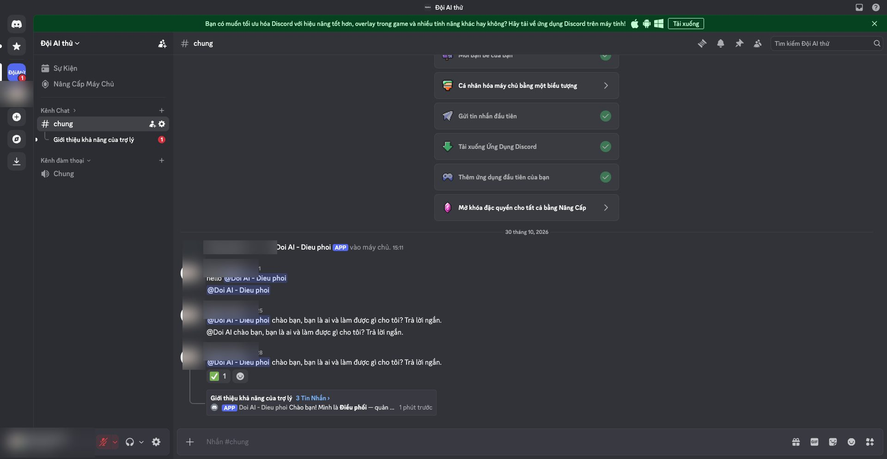
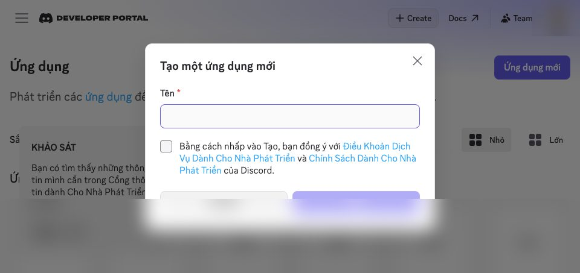
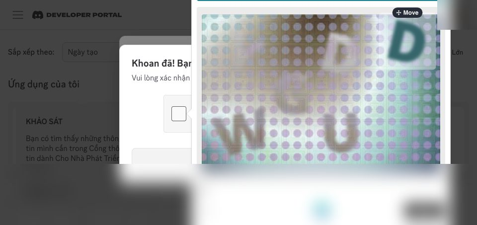
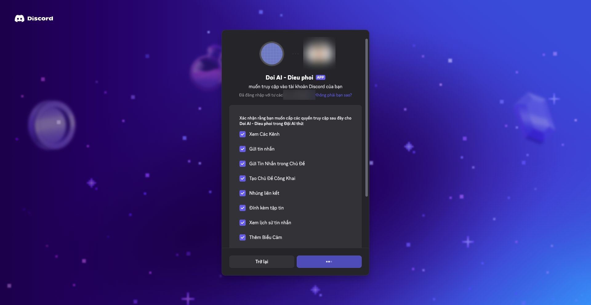
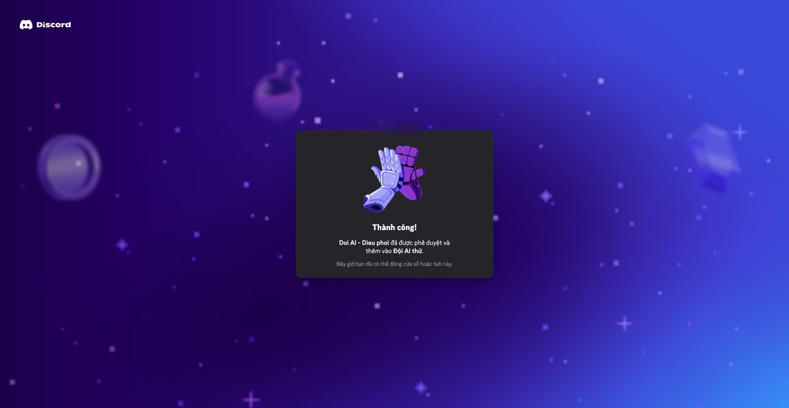
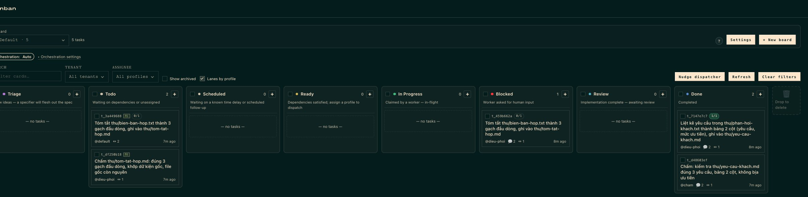

Bạn sẽ có gì
Kiến trúc giữ đúng như đội AI người viết đang dùng hằng ngày: một bot nhận việc và chia việc, các bot làm từng phần, một bot chấm không phải bot làm, mọi việc đi qua bảng Kanban, chưa có bằng chứng thì không báo xong. Khác ở chỗ bản demo dùng model rẻ và cài trắng từ đầu.

Đọc trước: bạn cần một AI để hỏi ngay từ đầu
Hướng dẫn này có những bước gõ lệnh. Bạn không cần biết lập trình, nhưng lúc nào cũng phải có một AI bên cạnh để hỏi:
- Giai đoạn 1, chưa cài gì: mở ChatGPT, Claude hoặc Gemini bản web miễn phí bạn đang có. Dán "Lời nhờ số 1" ở cuối trang. AI web sẽ dẫn bạn từng bước, bạn kẹt chỗ nào thì chụp màn hình gửi nó.
- Giai đoạn 2, Hermes đã chạy: từ đây hỏi thẳng Hermes trên máy. Dán "Lời nhờ số 2", Hermes tự làm phần còn lại: cài CLIProxy, nối Kira, tạo cấu hình 5 bot, mời bot vào máy chủ, bật Kanban.
Bạn chỉ phải tự tay làm những việc mà máy không được phép làm thay: đăng ký, nạp tiền, giải captcha, bật quyền bot, lấy token.
Chi phí
| Khoản | Tiền |
|---|---|
| Hermes Agent, CLIProxy, Discord | 0đ |
| Nạp ví Kira để chạy model | 50.000đ |
Đo thật: bot Điều phối (model deepseek-v4.1-flash) 5 lượt hỏi, gồm 1 lượt tự ghi file và 1 lượt trả lời trên Discord, hết khoảng 316đ. Mỗi lượt hỏi gửi kèm khoảng 12.000 token "khung" (luật, công cụ), nên một câu chào cũng tốn khoảng 50-60đ.
50.000đ chạy được bao nhiêu việc trọn vòng (giao, làm, chấm) đang đo, sẽ cập nhật. Giá model Kira ngày 30/10/2026, tính trên 1 triệu token (vào / ra): mimo-v2.6-flash 3.640đ / 7.280đ, qwen3.8-flash 4.160đ / 12.220đ, glm-5.3-flash 3.900đ / 13.000đ, deepseek-v4.1-flash 4.030đ / 16.120đ, minimax-m3.1-flash 4.290đ / 17.160đ. Giá có thể đổi: kiraai.vn/bang-gia.
Cần chuẩn bị
- Máy Mac chip Apple (M1 trở lên). Windows chưa thử.
- Tài khoản Discord.
- 50.000đ.
- Khoảng 45-60 phút cho đủ 5 bot (ước tính từ lần chạy 1 bot, xem bảng dưới).
- Không cài trên máy công ty, không đưa tài liệu công ty vào khi quy định không cho phép.
Thứ tự A → O: ai làm, mất bao lâu
NGƯỜI = bạn bắt buộc tự làm. TỰ ĐỘNG = Hermes làm khi bạn dán "Lời nhờ số 2". Thời gian đo thật khi dựng bot đầu tiên.
| # | Việc | Ai | Thời gian |
|---|---|---|---|
| A | Mở AI web, dán Lời nhờ số 1 | NGƯỜI | 1 phút |
| B | Đăng ký Kira, nạp 50.000đ, tạo khóa API | NGƯỜI | chưa đo |
| C | Cài Hermes: dán 1 lệnh vào Terminal | NGƯỜI | chưa đo trên máy sạch |
| D | Cài CLIProxy, nối Kira, chạy nền | TỰ ĐỘNG | 1 phút |
| E | Nối Hermes vào CLIProxy, kiểm trả lời và ghi file | TỰ ĐỘNG | 2 phút |
| F | Đăng nhập Discord, tạo máy chủ | NGƯỜI | 2-3 phút |
| G | Tạo ứng dụng bot, giải captcha | NGƯỜI | 7 phút cho bot đầu tiên |
| H | Bật Message Content Intent và Server Members Intent | NGƯỜI | |
| I | Reset Token, dán vào file thông tin | NGƯỜI | |
| J | Kiểm token, mời bot vào máy chủ với đúng 8 quyền | TỰ ĐỘNG (bạn bấm "Phê duyệt") | 1 phút |
| K | Gắn token vào Hermes, dặn bot nói tiếng Việt, chạy bot | TỰ ĐỘNG | 2 phút |
| L | Nhắn thử bot trên Discord | NGƯỜI | bot trả lời 4,9 giây |
| M | Lặp G → K cho 4 bot còn lại | NGƯỜI + TỰ ĐỘNG | dự kiến 20-25 phút |
| N | Bật luật đội, mở bảng Kanban | TỰ ĐỘNG (Kanban có sẵn trong Hermes) | bot nhận thẻ trong 1 phút |
| O | Giao thử 1 việc trọn vòng: làm → chấm → báo | NGƯỜI giao việc | 1 việc làm + chấm PASS: 6 phút (15:42 → 15:48, gồm lúc tạo thêm bot Chấm) |
Làm từng bước
B. Đăng ký Kira và lấy khóa API
- Vào kiraai.vn (link giới thiệu của người viết), đăng ký.
- Nạp 50.000đ vào ví VND. Gói tháng của Kira chỉ áp cho model tên
kira-..., đội này trả theo ví. - Tạo khóa API, đặt tên
doi-ai. Khóa này là tiền của bạn: chỉ dán cho Hermes trên máy mình, không gửi ai, không chụp màn hình.
C. Cài Hermes
Mở Terminal, dán:
curl -fsSL https://hermes-agent.nousresearch.com/install.sh | bashĐóng Terminal, mở lại, gõ hermes --version ra số phiên bản là xong. Từ đây chuyển sang hỏi Hermes (Lời nhờ số 2).
F. Tạo máy chủ Discord
Trong Discord: bấm dấu + bên trái → Tạo Mẫu Riêng → Dành cho tôi và bạn bè tôi → xóa hết chữ có sẵn trong ô tên, gõ "Đội AI" → Tạo.
Ô tên có sẵn chữ "Máy chủ của <tên bạn>". Nhớ xóa trước khi gõ, nếu không tên sẽ bị ghép.
G. Tạo ứng dụng bot (làm 5 lần)
Vào discord.com/developers/applications → Ứng dụng mới → đặt tên (ví dụ "Doi AI - Dieu phoi") → tick đồng ý → Tạo.

Discord sẽ hỏi captcha "Bạn là con người phải không?". Bước này bắt buộc người làm, máy không được làm thay.

Tên gợi ý cho 5 bot: Doi AI - Dieu phoi, Doi AI - Nghien cuu, Doi AI - Viet, Doi AI - Cham, Doi AI - Lam nang.
H. Bật quyền đọc tin nhắn
Trong ứng dụng vừa tạo → menu trái Bot → mục Privileged Gateway Intents:
- Message Content Intent: BẬT. Thiếu cái này bot không đọc được bạn nói gì.
- Server Members Intent: BẬT.
- Presence Intent: không cần.
Bấm Save Changes. Discord không cho bật mục này bằng lệnh, nên phải bấm tay.
I. Lấy token
Cùng trang Bot → Reset Token → copy. Token chỉ hiện một lần và là mật khẩu của bot. Dán vào file thông tin mà Hermes tạo cho bạn (Lời nhờ số 2 bảo Hermes tạo file này), cùng Application ID lấy ở trang General Information.
J. Mời bot vào máy chủ
Hermes tạo link mời với đúng 8 quyền. Bạn mở link, bấm Phê duyệt.


Nếu tự tạo link: trong OAuth2 → URL Generator chỉ tick bot và 8 quyền trên. Không tick Administrator, Manage Messages, Manage Threads. Mã quyền tương ứng: 309237763136.
L. Nhắn thử
Trong kênh, gõ @ rồi chọn đúng tên bot có nhãn APP trong danh sách gợi ý, rồi gõ câu hỏi.
Discord tự tạo một "vai trò" trùng tên với bot. Chọn nhầm vai trò (không có nhãn APP) thì bot không nhận tin. Bot trả lời trong một chủ đề mới tự mở, không trả lời ngay dưới tin.
Bảng Kanban: có sẵn trong Hermes, không phải tự xây
Bảng Kanban là chỗ bạn nhìn thấy đội đang làm gì: việc nào chờ, việc nào đang chạy, việc nào bị kẹt cần bạn trả lời, việc nào xong. Bảng này có sẵn trong Hermes. Model rẻ không phải xây gì cả, chỉ cần nhận thẻ và làm.
Mở bảng: gõ hermes dashboard trong Terminal, rồi mở http://127.0.0.1:9119 trên trình duyệt, bấm mục KANBAN ở menu trái.

| Cột | Nghĩa |
|---|---|
| Todo | Việc đang chờ việc khác xong trước (ví dụ thẻ Chấm chờ thẻ làm) |
| Ready | Đủ điều kiện, bot sẽ nhận trong vòng 1 phút |
| In Progress | Bot đang làm |
| Blocked | Bot cần bạn trả lời: bấm vào thẻ xem câu hỏi |
| Done | Xong. Bấm vào thẻ xem kết quả và lời chấm |
Kết quả chấm thật: "PASS — file tồn tại, bảng đúng 2 cột (Yêu cầu | Mức ưu tiên), đủ 3 yêu cầu khớp nguyên văn file gốc, không bịa thêm." Bot làm cũng tự ghi "mức ưu tiên: chưa xác định" thay vì bịa, đúng luật đội.
Lưu ý khi chạy thật: Điều phối có lúc giao thẻ cho bot chưa tạo (thẻ bị kẹt). Tạo đủ 5 bot trước khi giao việc thật.
Đã có sẵn Claude, ChatGPT hoặc Gemini trả phí?
Nếu bạn đang trả tiền gói Claude, ChatGPT hoặc Gemini, có thể cho model xịn đó làm Điều phối chính, còn các bot làm việc vẫn dùng model rẻ của Kira. Điều phối là vị trí quyết định chất lượng cả đội: hiểu việc, chia việc, đọc kết quả chấm.
- Có khóa API (OpenAI, Anthropic, Google): khai báo thêm nhà cung cấp đó trong CLIProxy, đổi dòng
namecủadieu-phoisang model xịn. - Chỉ có gói tháng (ChatGPT Plus, Claude Pro): CLIProxy đăng nhập được bằng gói, nhưng điều khoản các hãng không cho dùng gói theo kiểu tự động này, tài khoản có thể bị khóa. Đọc kỹ điều khoản và tự quyết.
Sau đó cài thêm các bot khác như hướng dẫn này.
Những lỗi người viết đã gặp khi chạy thật
- CLIProxy phải có thư mục đăng nhập riêng. Thiếu dòng
oauth: auth-dir:trỏ thư mục trống, CLIProxy sẽ đọc thư mục mặc định~/.cli-proxy-api. Máy nào đã cài CLIProxy trước sẽ bị dính tài khoản cũ. - Nối Hermes vào CLIProxy phải đúng kiểu. Khai báo provider tên
cliproxyvớikey_env: CLIPROXY_API_KEY, khóa để trong file.envcủa bot. Kiểuprovider: custombị CLIProxy từ chối (lỗi 401). - Model rẻ có lúc trả lời tiếng Trung. Phải dặn trong file tính cách
SOUL.mdcủa bot: "Luôn trả lời bằng tiếng Việt". - Bot không biết mình chạy model gì (chỉ thấy tên tắt như
dieu-phoi). Ghi model thật vàoSOUL.mdnếu muốn bot trả lời đúng.
Cấu hình đã chạy được
Hermes viết các file này giúp bạn. Để đây để bạn (hoặc AI của bạn) đối chiếu.
CLIProxy (config.yaml), thay chữ in hoa:
config-version: 8
server:
host: "127.0.0.1"
port: 8317
oauth:
auth-dir: "~/doi-ai/cliproxy-auth" # thư mục riêng, trống
access:
api-keys:
- "MAT-KHAU-TU-DAT"
api-keys:
openai-compatibility:
- name: "kira"
base-url: "https://kiraai.vn/api/v1"
keys:
- api-key: "KHOA-KIRA"
models:
- name: "deepseek-v4.1-flash"
alias: "dieu-phoi"
- name: "qwen3.8-flash"
alias: "nghien-cuu"
- name: "mimo-v2.6-flash"
alias: "viet"
- name: "glm-5.3-flash"
alias: "cham"
- name: "minimax-m3.1-flash"
alias: "lam-nang"Hermes, mỗi bot (~/.hermes/profiles/<tên-bot>/config.yaml):
model:
default: dieu-phoi # đổi theo tên bot
provider: cliproxy
base_url: http://127.0.0.1:8317/v1
key_env: CLIPROXY_API_KEY
providers:
cliproxy:
name: CLIProxy (Kira)
base_url: http://127.0.0.1:8317/v1
key_env: CLIPROXY_API_KEY
api_mode: chat_completions
terminal:
cwd: ~/doi-aiFile .env của bot: CLIPROXY_API_KEY=MAT-KHAU-TU-DAT, DISCORD_BOT_TOKEN=TOKEN-CUA-BOT, DISCORD_ALLOWED_USERS=USER-ID-CUA-BAN.
Lời nhờ số 1: dán vào ChatGPT / Claude / Gemini bản web
Bạn là người hướng dẫn cài đặt. Tôi là dân văn phòng, không biết lập trình, dùng Mac chip Apple.
Tôi muốn cài Hermes Agent để dựng một đội AI trên Discord theo hướng dẫn:
https://linhnlm2810.github.io/lazy-ai-guide/doi-ai-50k/
Làm như sau:
1. Mỗi lần chỉ đưa MỘT bước, chờ tôi báo kết quả rồi mới sang bước tiếp.
2. Bước đầu: chỉ tôi mở Terminal trên Mac.
3. Rồi chỉ tôi dán lệnh cài Hermes:
curl -fsSL https://hermes-agent.nousresearch.com/install.sh | bash
4. Khi gõ "hermes --version" ra số phiên bản, bảo tôi chạy "hermes setup" và dẫn tôi chọn tạm một model để Hermes nói chuyện được.
5. Khi Hermes đã trả lời được, bảo tôi chuyển sang dán "Lời nhờ số 2" của trang hướng dẫn vào Hermes.
Tôi gửi ảnh chụp màn hình khi bị lỗi. Không bảo tôi dán khóa, mật khẩu, token vào đây.Lời nhờ số 2: dán vào Hermes khi đã chạy
Đọc hướng dẫn https://linhnlm2810.github.io/lazy-ai-guide/doi-ai-50k/ (phần "Cấu hình đã chạy được" và "Những lỗi đã gặp").
Dựng giúp tôi đội 5 bot: dieu-phoi, nghien-cuu, viet, cham, lam-nang. Làm lần lượt, mỗi bước báo kết quả thật:
1. Tạo thư mục ~/doi-ai và ~/doi-ai/cliproxy-auth (để trống).
2. Tải CLIProxy bản mới nhất cho Mac từ https://github.com/router-for-me/CLIProxyAPI/releases, viết config.yaml đúng mẫu
(có oauth.auth-dir trỏ ~/doi-ai/cliproxy-auth), tự sinh mật khẩu dài ngẫu nhiên, chạy nền.
Hỏi tôi khóa Kira; tôi sẽ dán vào đây, chỉ ghi vào file config.yaml, không in lại.
3. Kiểm: không mật khẩu báo 401; có mật khẩu thấy đủ 5 tên bot.
4. Tạo 5 profile Hermes, mỗi bot config.yaml theo mẫu, .env có CLIPROXY_API_KEY, SOUL.md dặn vai trò,
luôn trả lời tiếng Việt, ghi model thật đang dùng.
5. Kiểm từng bot trả lời "OK" và tự tạo được một file thử trong ~/doi-ai.
6. Tạo file ~/doi-ai/thong-tin-bot.txt (quyền chỉ mình tôi đọc) có chỗ trống để tôi dán App ID và Token của 5 bot.
Hướng dẫn tôi làm bước G, H, I trên Discord cho từng bot.
7. Khi tôi báo đã dán xong: kiểm token, tạo link mời bot với permissions=309237763136, đưa tôi bấm Phê duyệt,
gắn token vào từng bot, chạy gateway, bật Kanban.
8. Tạo ~/doi-ai/AGENTS.md: Điều phối chỉ chia việc; mọi thẻ Kanban dùng workspace dir trỏ ~/doi-ai;
thẻ Chấm chạy sau thẻ làm; chỉ báo xong khi Chấm PASS; không bịa số; không xóa file.
Không bao giờ in khóa, mật khẩu, token ra màn hình.An toàn
- Chỉ cài trên máy cá nhân. Bot đọc được mọi thứ tài khoản máy bạn đọc được.
- Giữ kín: khóa Kira, file cấu hình CLIProxy, token 5 bot, thư mục
~/.hermes. - Luật trong
AGENTS.mdlà lời dặn AI, không phải khóa kỹ thuật. Bot vẫn có thể làm sai: luôn mở file kết quả tự kiểm.
Muốn đội làm tốt việc thật của bạn
Bản demo dùng model rẻ: đủ để thấy đội AI làm việc với nhau, chưa đủ cho việc dài và quan trọng. Muốn đội làm việc thật mỗi ngày thì cần 2 thứ:
- Model tốt hơn cho Điều phối và Chấm (đổi 1 dòng trong cấu hình CLIProxy).
- Quy trình riêng cho công việc của bạn: việc gì giao ai, thế nào là đạt, kỹ năng cho từng loại việc, lịch tự chạy.
Phần 2 người viết tư vấn riêng, khóa 7 ngày theo đúng công việc của bạn.
Đăng ký tư vấnCập nhật 30/10/2026. Đã chạy thật trên Mac: bot Điều phối trên Discord, bảng Kanban, 1 việc làm và chấm PASS. Đủ 5 bot trên máy sạch đang chạy thử, sẽ cập nhật số liệu.